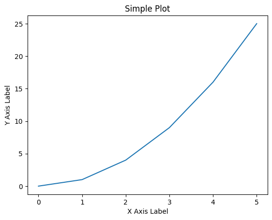

Example: Zinc Powder from a Supplier#
Let’s describe an instance of some zinc powder with a set of properties defined in the specification sheet from the manufacturer!
[17]:
# Install and import dependencies
!pip install jsonschema rdflib requests matplotlib > /dev/null
import json
import rdflib
import requests
import sys
from IPython.display import Image, display
import matplotlib.pyplot as plt
The JSON-LD data that we will use is:
[18]:
jsonld = {
"@context": "https://raw.githubusercontent.com/emmo-repo/domain-electrochemistry/master/context.json",
"@type": ["Zinc", "Powder"],
"schema:manufacturer": {
"@id": "https://www.wikidata.org/wiki/Q680841",
"schema:name": "Sigma-Aldrich"
},
"schema:productID": "324930",
"schema:url": "https://www.sigmaaldrich.com/NO/en/product/aldrich/324930",
"hasProperty": [
{
"@type": ["D95ParticleSize", "ConventionalProperty"],
"hasNumericalPart": {
"@type": "Real",
"hasNumericalValue": 150
},
"hasMeasurementUnit": "emmo:MicroMetre",
"dc:source": "https://www.sigmaaldrich.com/NO/en/product/aldrich/324930"
}
]
}
Now let’s see how a machine would process this by reading it into an RDF Graph! We can then use SPARQL to write a query and list all the things the machine thinks is in this file…
[19]:
# Create a new graph
g = rdflib.Graph()
g.parse(data=json.dumps(jsonld), format="json-ld")
query_all = """
SELECT ?subject ?predicate ?object
WHERE {
?subject ?predicate ?object
}
"""
# Execute the SPARQL query
all_the_things = g.query(query_all)
# Print the results
for row in all_the_things:
print(row)
(rdflib.term.BNode('Nc41f2c7bf5bd497e9161e124fe2bfc66'), rdflib.term.URIRef('http://www.w3.org/1999/02/22-rdf-syntax-ns#type'), rdflib.term.URIRef('https://w3id.org/emmo/domain/chemicalsubstance#substance_9bd78e1c_a4dc_41b6_8013_adb51df1ffdc'))
(rdflib.term.BNode('Nc41f2c7bf5bd497e9161e124fe2bfc66'), rdflib.term.URIRef('https://schema.org/manufacturer'), rdflib.term.URIRef('https://www.wikidata.org/wiki/Q680841'))
(rdflib.term.BNode('Nd2170694b6284f04aea18b7229390552'), rdflib.term.URIRef('http://www.w3.org/1999/02/22-rdf-syntax-ns#type'), rdflib.term.URIRef('http://emmo.info/emmo#EMMO_18d180e4_5e3e_42f7_820c_e08951223486'))
(rdflib.term.BNode('N0b3d6babf6ed4b289629f69ed796200c'), rdflib.term.URIRef('http://emmo.info/emmo#EMMO_8ef3cd6d_ae58_4a8d_9fc0_ad8f49015cd0'), rdflib.term.BNode('Nd2170694b6284f04aea18b7229390552'))
(rdflib.term.BNode('Nc41f2c7bf5bd497e9161e124fe2bfc66'), rdflib.term.URIRef('https://schema.org/productID'), rdflib.term.Literal('324930'))
(rdflib.term.BNode('N0b3d6babf6ed4b289629f69ed796200c'), rdflib.term.URIRef('http://emmo.info/emmo#EMMO_bed1d005_b04e_4a90_94cf_02bc678a8569'), rdflib.term.URIRef('http://emmo.info/emmo#MicroMetre'))
(rdflib.term.BNode('Nc41f2c7bf5bd497e9161e124fe2bfc66'), rdflib.term.URIRef('http://www.w3.org/1999/02/22-rdf-syntax-ns#type'), rdflib.term.URIRef('https://w3id.org/emmo/domain/electrochemistry#electrochemistry_ee479886_6805_4018_95e1_500185e44215'))
(rdflib.term.BNode('Nd2170694b6284f04aea18b7229390552'), rdflib.term.URIRef('http://emmo.info/emmo#EMMO_faf79f53_749d_40b2_807c_d34244c192f4'), rdflib.term.Literal('150', datatype=rdflib.term.URIRef('http://www.w3.org/2001/XMLSchema#integer')))
(rdflib.term.BNode('Nc41f2c7bf5bd497e9161e124fe2bfc66'), rdflib.term.URIRef('http://emmo.info/emmo#EMMO_e1097637_70d2_4895_973f_2396f04fa204'), rdflib.term.BNode('N0b3d6babf6ed4b289629f69ed796200c'))
(rdflib.term.BNode('Nc41f2c7bf5bd497e9161e124fe2bfc66'), rdflib.term.URIRef('https://schema.org/url'), rdflib.term.Literal('https://www.sigmaaldrich.com/NO/en/product/aldrich/324930'))
(rdflib.term.BNode('N0b3d6babf6ed4b289629f69ed796200c'), rdflib.term.URIRef('http://purl.org/dc/elements/1.1/source'), rdflib.term.Literal('https://www.sigmaaldrich.com/NO/en/product/aldrich/324930'))
(rdflib.term.URIRef('https://www.wikidata.org/wiki/Q680841'), rdflib.term.URIRef('https://schema.org/name'), rdflib.term.Literal('Sigma-Aldrich'))
(rdflib.term.BNode('N0b3d6babf6ed4b289629f69ed796200c'), rdflib.term.URIRef('http://www.w3.org/1999/02/22-rdf-syntax-ns#type'), rdflib.term.URIRef('https://w3id.org/emmo/domain/electrochemistry#electrochemistry_02d2d1d1_241c_429b_b4e7_31f2c3dc4835'))
(rdflib.term.BNode('N0b3d6babf6ed4b289629f69ed796200c'), rdflib.term.URIRef('http://www.w3.org/1999/02/22-rdf-syntax-ns#type'), rdflib.term.URIRef('http://emmo.info/emmo#EMMO_d8aa8e1f_b650_416d_88a0_5118de945456'))
Now, let’s write a SPARQL query to get back some specific thing…like what is the name of the manufacturer?
[20]:
query = """
PREFIX schema: <https://schema.org/>
SELECT ?manufacturerName
WHERE {
?product schema:manufacturer ?manufacturer .
?manufacturer schema:name ?manufacturerName .
}
"""
# Execute the SPARQL query
results = g.query(query)
# Print the results
for row in results:
print(row)
(rdflib.term.Literal('Sigma-Aldrich'),)
[21]:
endpoint_url = "https://query.wikidata.org/sparql"
# SPARQL query to get the mass of zinc (Q758)
query = """
SELECT ?mass WHERE {
wd:Q758 wdt:P2067 ?mass .
}
"""
# Set headers for request
headers = {"User-Agent": "WDQS-example Python/%s.%s" % (sys.version_info[0], sys.version_info[1])}
# Execute the request
response = requests.get(endpoint_url, headers=headers, params={'query': query, 'format': 'json'})
data = response.json()
# Extract and print the mass value
mass = data['results']['bindings'][0]['mass']['value']
print(f"Mass of Zinc: {mass}")
Mass of Zinc: 65.38
[22]:
# SPARQL query to get the image of zinc (Q758)
query = """
SELECT ?image WHERE {
wd:Q758 wdt:P18 ?image .
}
"""
# Set headers for request
headers = {"User-Agent": "WDQS-example Python/%s.%s" % (sys.version_info[0], sys.version_info[1])}
# Execute the request
response = requests.get(endpoint_url, headers=headers, params={'query': query, 'format': 'json'})
data = response.json()
# Extract and display the image URL
if data['results']['bindings']:
image_url = data['results']['bindings'][0]['image']['value']
print(f"Image of Zinc: {image_url}")
display(Image(url=image_url, width=300, height=300)) # Adjust width and height as needed
else:
print("No image found for Zinc.")
Image of Zinc: http://commons.wikimedia.org/wiki/Special:FilePath/Zinc%20fragment%20sublimed%20and%201cm3%20cube.jpg

[23]:
# Sample data
x = [0, 1, 2, 3, 4, 5]
y = [0, 1, 4, 9, 16, 25]
# Create a figure and axis
fig, ax = plt.subplots()
# Plot data
ax.plot(x, y)
# Set labels and title
ax.set_xlabel('X Axis Label')
ax.set_ylabel('Y Axis Label')
ax.set_title('Simple Plot')
# Display the plot
plt.show()
